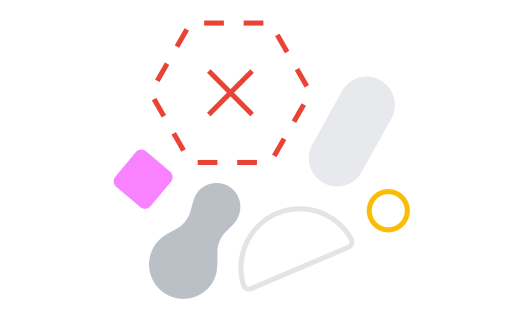

<!-- Copyright 2018 The Chromium Authors. All rights reserved.
     Use of this source code is governed by a BSD-style license that can be
     found in the LICENSE file. -->

<link rel="import" href="chrome://resources/html/polymer.html">

<link rel="import" href="chrome://resources/cr_elements/shared_vars_css.html">
<link rel="import" href="chrome://resources/html/i18n_behavior.html">
<link rel="import" href="chrome://resources/polymer/v1_0/iron-icon/iron-icon.html">
<link rel="import" href="chrome://resources/polymer/v1_0/paper-progress/paper-progress.html">

<link rel="import" href="../../components/behaviors/login_screen_behavior.html">
<link rel="import" href="../../components/behaviors/multi_step_behavior.html">
<link rel="import" href="../../components/behaviors/oobe_i18n_behavior.html">
<link rel="import" href="../../components/buttons/oobe_text_button.html">
<link rel="import" href="../../components/common_styles/common_styles.html">
<link rel="import" href="../../components/common_styles/oobe_dialog_host_styles.html">
<link rel="import" href="../../components/dialogs/oobe_adaptive_dialog.html">

<dom-module id="management-transition-element">
  <template>
    <style include="oobe-dialog-host-styles">
      paper-progress {
        --paper-progress-active-color: rgb(66, 133, 244); /*#4285F4*/
        --paper-progress-container-color: rgb(206, 224, 252); /*#CEE0FC*/
        --paper-progress-secondary-color: rgb(66, 133, 244); /*#4285F4*/
        height: 3px;
        width: 100%;
      }
    </style>
    <oobe-adaptive-dialog id="managementTransitionDialog" role="dialog"
        aria-label$="[[getDialogTitle_(locale, arcTransition_, managementEntity_)]]"
        for-step="progress">
      <iron-icon slot="icon" icon="oobe-32:enterprise" aria-hidden="true"
        hidden="[[isChildTransition_(arcTransition_)]]">
      </iron-icon>
      <iron-icon slot="icon" src="chrome://oobe/supervision_icon.png"
        aria-hidden="true" hidden="[[!isChildTransition_(arcTransition_)]]">
      </iron-icon>
      <h1 slot="title">
        [[getDialogTitle_(locale, arcTransition_, managementEntity_)]]
      </h1>
      <div slot="subtitle">
        [[i18nDynamic(locale, 'managementTransitionIntroMessage')]]
      </div>
      <div slot="content" class="flex layout vertical center-justified"
          aria-live="off">
        <paper-progress class="slow" aria-hidden="true" indeterminate>
        </paper-progress>
      </div>
    </oobe-adaptive-dialog>
    <oobe-adaptive-dialog id="managementTransitionErrorDialog" role="dialog"
        aria-label$="[[i18nDynamic(locale,'managementTransitionErrorTitle')]]"
        for-step="error">
      <iron-icon slot="icon" icon="oobe-32:enterprise" aria-hidden="true"
        hidden="[[isChildTransition_(arcTransition_)]]">
      </iron-icon>
      <iron-icon slot="icon" src="chrome://oobe/supervision_icon.png"
        aria-hidden="true" hidden="[[!isChildTransition_(arcTransition_)]]">
      </iron-icon>
      <h1 slot="title">
        [[i18nDynamic(locale, 'managementTransitionErrorTitle')]]
      </h1>
      <div slot="subtitle">
        [[i18nDynamic(locale, 'managementTransitionErrorMessage')]]
      </div>
      <div slot="content" class="flex layout vertical center center-justified">
        
      </div>
      <div slot="bottom-buttons">
        <oobe-text-button id="accept-button" on-click="onAcceptAndContinue_"
            text-key="managementTransitionErrorButton" class="focus-on-show"
            inverse>
        </oobe-text-button>
      </div>
    </oobe-adaptive-dialog>
  </template>
  <script src="management_transition.js"></script>
</dom-module>
